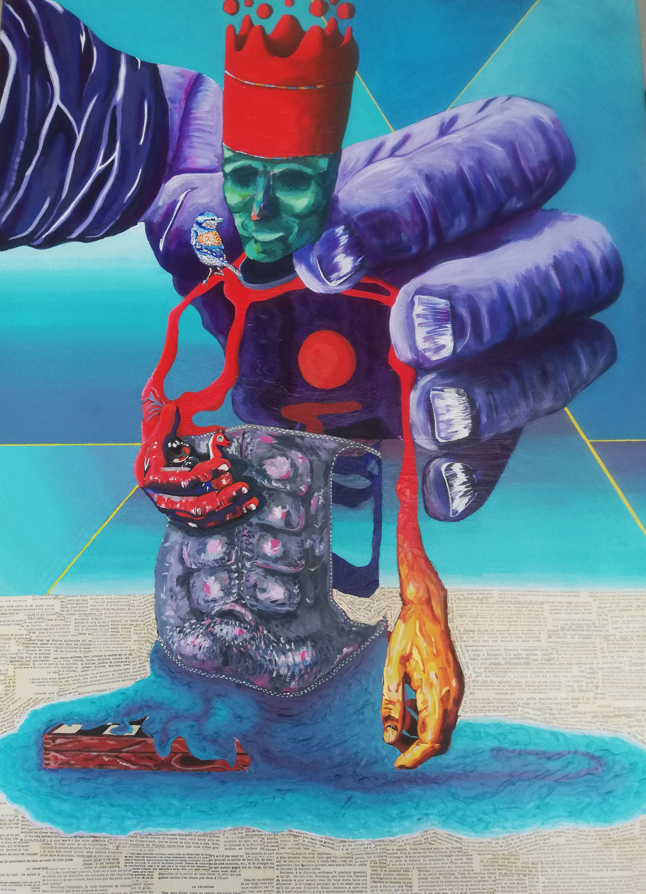
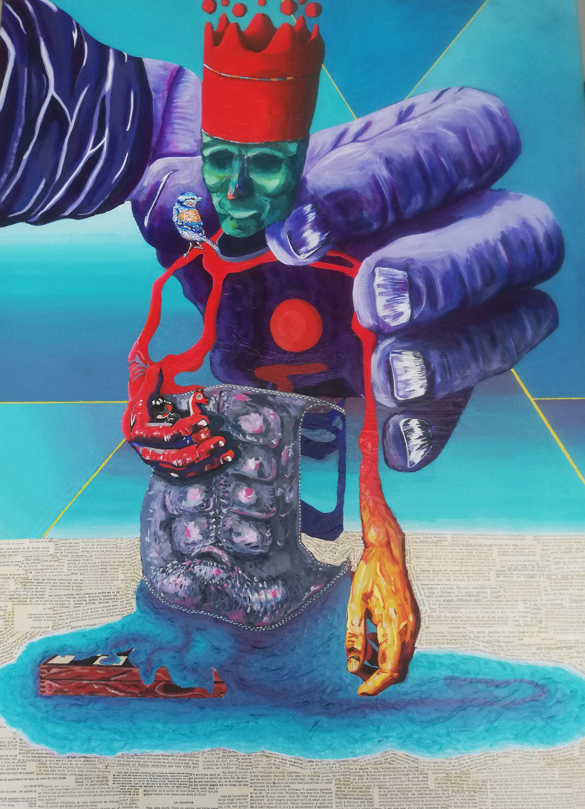

À propos
Raphaël Brunet est né le 25 mai 1994 à Poitiers. Il vit et travaille entre Poitiers et Marseille. Après un baccalauréat en arts appliqués à Bressuire, il poursuit une licence en Beaux-Arts à Brest, puis un baccalauréat en arts visuels à Montréal.
Sa pratique se déploie à travers des œuvres multitechniques ou multimédia. Il travaille également sur des peintures dites automatiques réalisées à l’aérosol et à l’acrylique, en utilisant la paréidolie comme déclencheur visuel. La démarche de ces peintures oscille entre le conscient — ce que l’on veut voir — et l’inconscient — ce que l’on ne choisit pas de voir.
Dans sa série autour du jeu d’échecs, chaque pièce est associée à une idée précise qu’il souhaite évoquer, entre symbolique et questionnement personnel ou sociétal.
Voir le portfolio (à venir)Œuvres
 

Contact
📧 raphael.brunet1@gmail.com📸 Suivez-moi sur Instagram